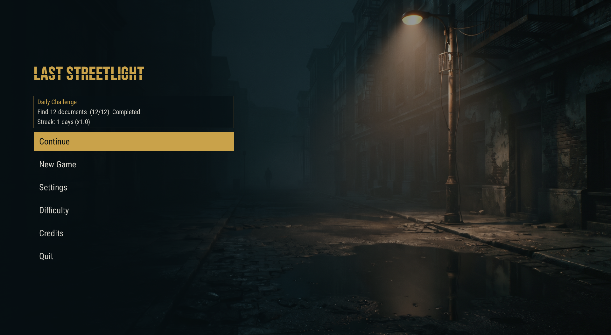
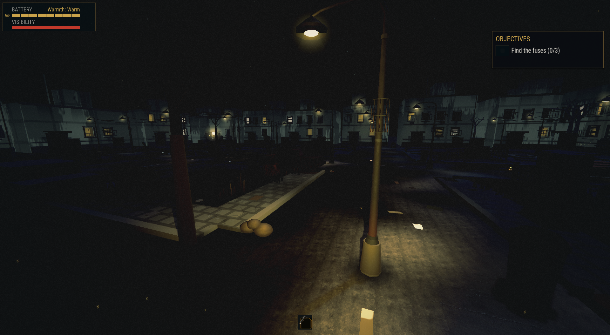
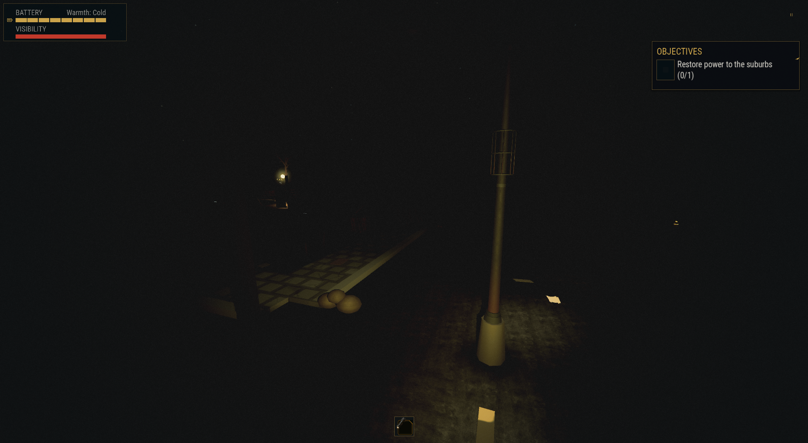
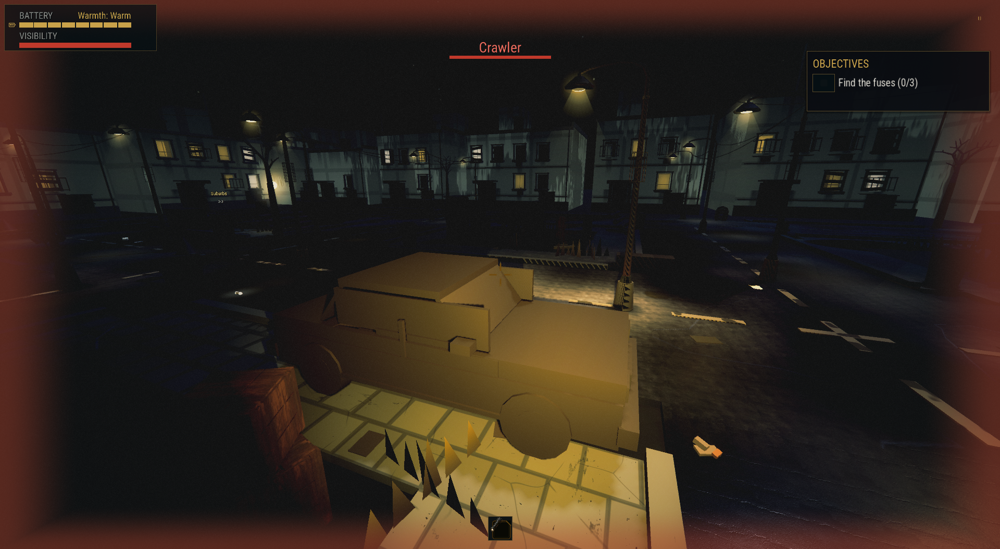
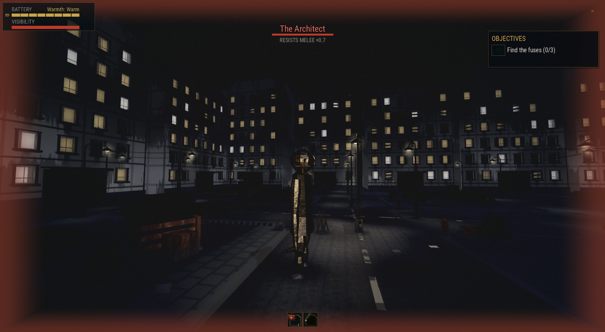
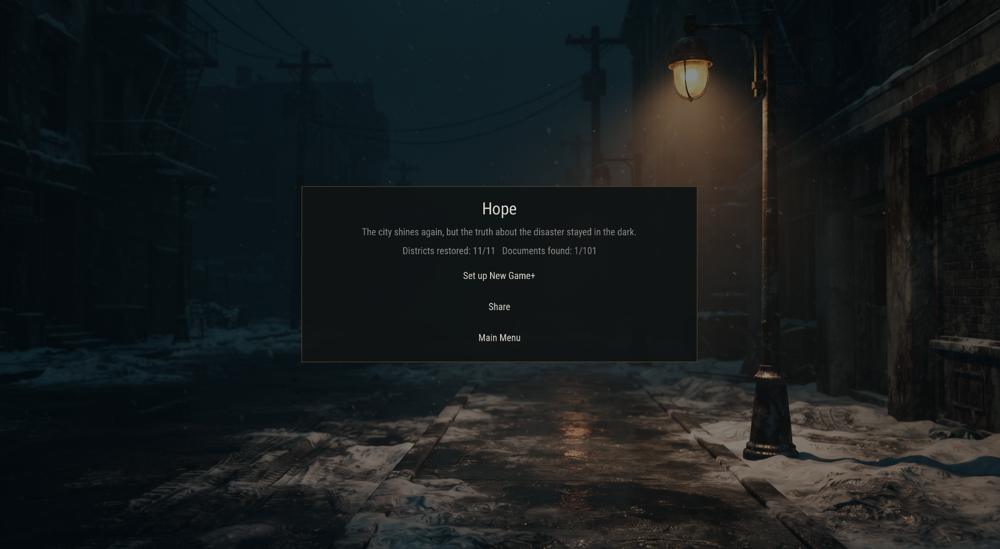
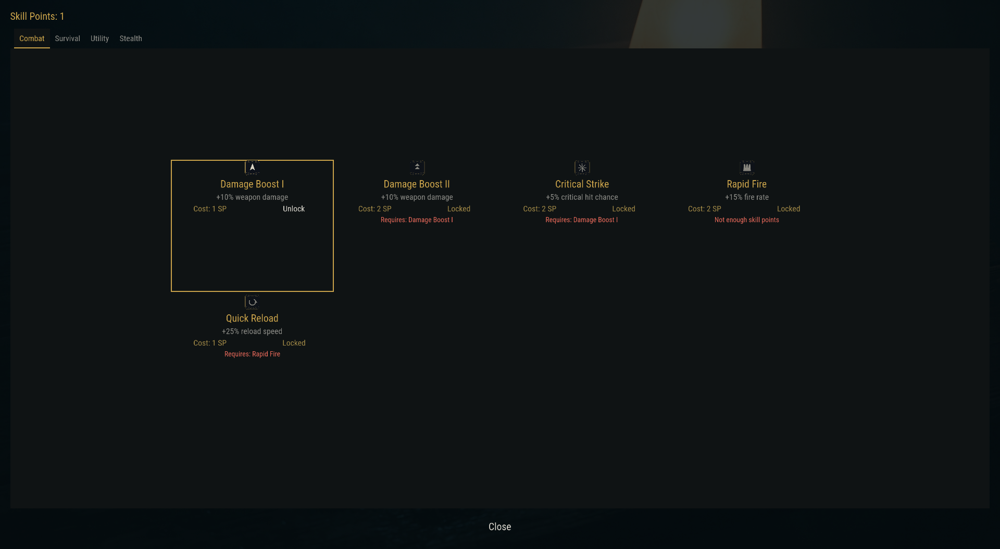
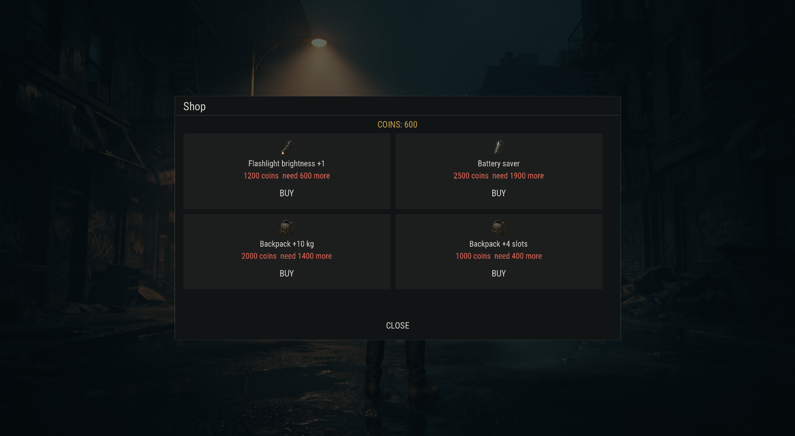

The beam is your lifeline
A single flashlight cuts the dark — but light draws attention. Manage the battery, the cone, and the silence between pulses.
FIRST-PERSON NIGHT HORROR · GODOT 4.7
The city grid died at 22:14. The streets belong to something else now. Keep the beam alive, stay quiet, and count the ones that are already here.
▾Real footage
Every screenshot below is a frame rendered from the current candidate build in a real windowed run — no concept art, no mockups.








Gameplay
A single flashlight cuts the dark — but light draws attention. Manage the battery, the cone, and the silence between pulses.
Enemies track sound and sight. Break line of sight, hug the fog, and let the district's own clutter hide you.
Hospital, police precinct, industrial dock, and the sealed school — each carries its own lore, its own count, and its own way to end you.
A New Game+ loop carries your build forward. The streets remember what you learned.
Diaries and scattered transmissions piece the night together — if you can hold still long enough to hear them.
Full gamepad and touch support with a 48px-minimum hit-target policy, so the controls never punish the hardware.
Story
One diarist counted them. Another read the ledger: 219 at the dock. The numbers do not agree, and neither does the city. You are the only light still moving — and the streetlight at the end of the block keeps flickering like it is counting you back.
Explore the districts, recover the recordings, and decide what to do with the power when you finally reach the source.
System requirements
Indicative desktop targets for the Godot 4.7 export. Final published requirements are set at store submission.
Add THE LAST STREETLIGHT to your wishlist and get the blackout alert the moment it ships.
Store links are placeholders pending publisher account setup.